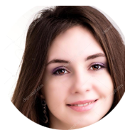

<!--
  Generated template for the AlunosPage page.

  See http://ionicframework.com/docs/components/#navigation for more info on
  Ionic pages and navigation.
-->


<ion-content padding>
    <ion-list>
        <ion-item>
          <ion-thumbnail item-start>
            
          </ion-thumbnail>
          <h2>Fernando Cavalcanti</h2>
          <p>Manhã • 3°A</p>
          <button ion-button clear item-end (click)="fernando()">Ver</button>
        </ion-item>
      </ion-list>
      <ion-list>
          <ion-item>
            <ion-thumbnail item-start>
              
            </ion-thumbnail>
            <h2>Flavia Cavalcanti</h2>
            <p>Tarde • 1°C</p>
            <button ion-button clear item-end (click)="flavia()" >Ver</button>
          </ion-item>
        </ion-list>
        <ion-list>
            <ion-item>
              <ion-thumbnail item-start>
                
              </ion-thumbnail>
              <h2>Fabia Cavalcanti</h2>
              <p>Noite • 2°B</p>
              <button ion-button clear item-end (click)="fabio()">Ver</button>
            </ion-item>
          </ion-list>
</ion-content>
